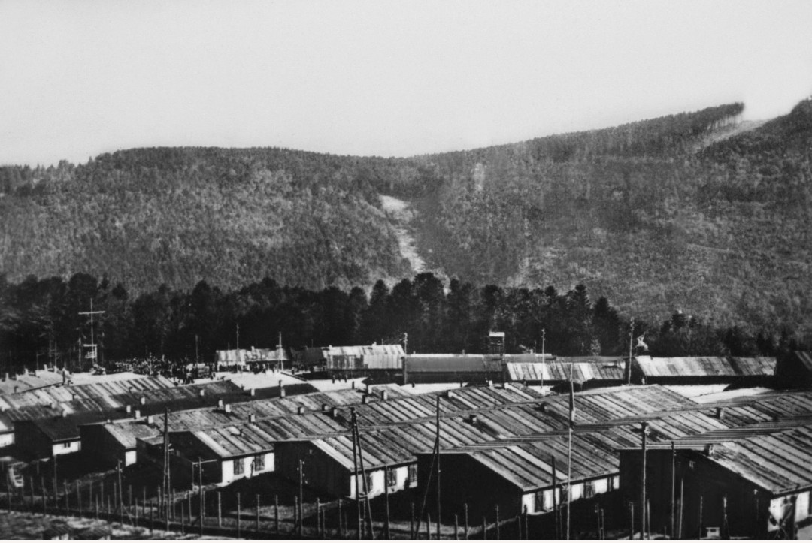
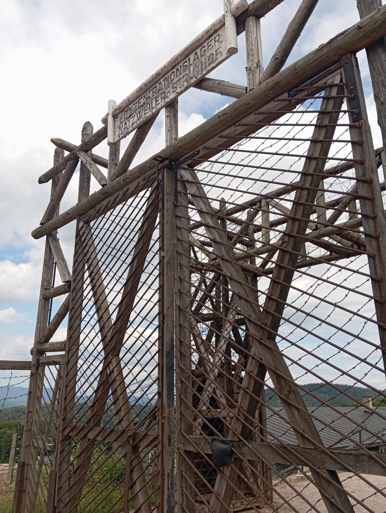
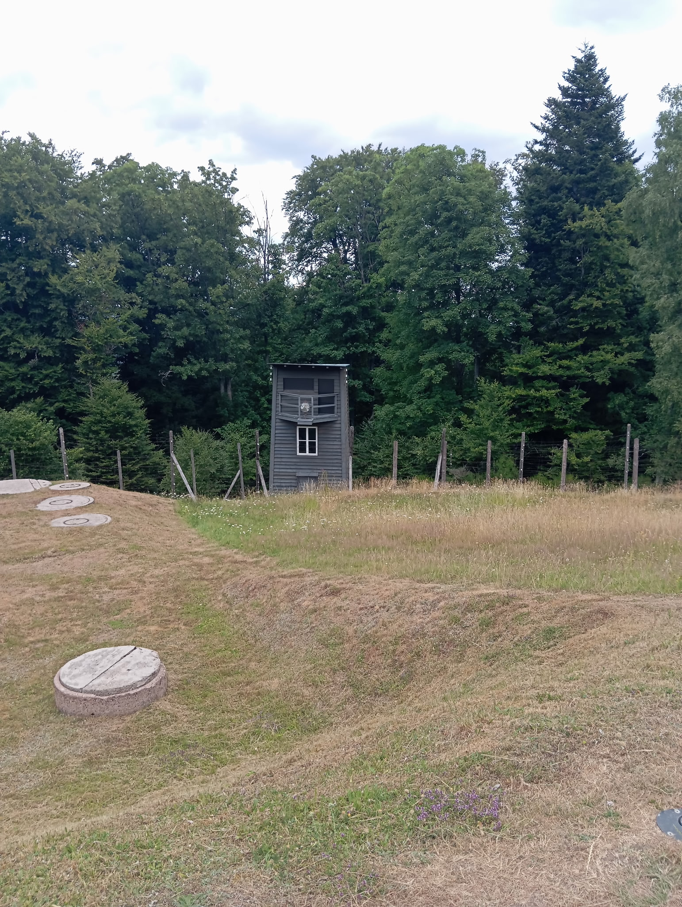
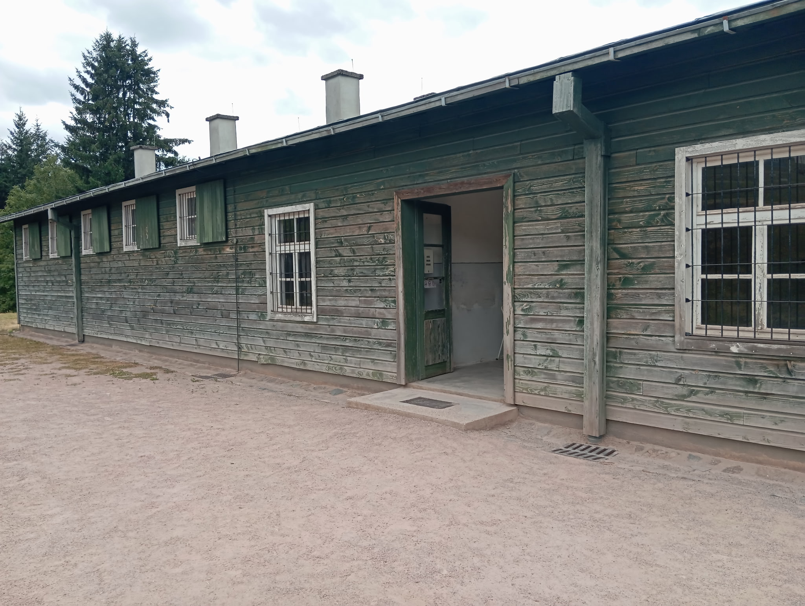
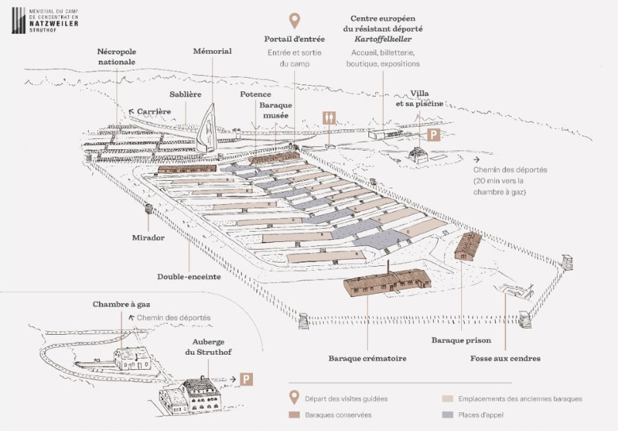

Le camp de concentration de Natzweiler‑Struthof, situé dans les Vosges, est le seul camp de concentration nazi installé sur le territoire français actuel. Ouvert en mai 1941, il dépendait directement de l’administration centrale des camps de la SS (IKL). Il a interné des résistants, des prisonniers politiques, des déportés « Nuit et Brouillard », ainsi que des détenus transférés depuis d’autres camps du Reich.
Construit à 800 mètres d’altitude sur le Mont Louise, le camp était isolé, difficile d’accès, et entouré de forêts. Cette position permettait aux SS de maintenir un contrôle strict et d’exploiter les détenus dans la carrière de granit voisine.




Le plan du site permet de visualiser l’ensemble des zones historiques : nécropole, mémorial, sablière, carrière, miradors, double enceinte, potence, baraques conservées, crématoire, prison, fosse aux cendres, chambre à gaz, villa SS, piscine, et le Centre Européen du Résistant Déporté.
Environ 52 000 prisonniers ont été internés au Struthof entre 1941 et 1944. La majorité étaient des résistants européens, des prisonniers politiques, des déportés NN (Nacht und Nebel), ainsi que des détenus transférés depuis Dachau, Buchenwald ou Mauthausen.
Les conditions de vie y étaient extrêmement dures : travail forcé, froid, sous‑alimentation, brutalités quotidiennes et mortalité élevée.
Le Struthof était un camp de concentration au sens strict du système SS : internement, travail forcé, discipline militaire, hiérarchie des détenus, et organisation identique aux autres camps du Reich. Il ne s’agissait pas d’un centre d’extermination, mais la mortalité y était très élevée.
Le Struthof est tristement connu pour des expérimentations médicales menées par des médecins SS, notamment par le professeur August Hirt. Ces expériences incluaient des tests sur les gaz toxiques, des injections de maladies infectieuses, des expériences sur la peau, le froid, et des études pseudo‑scientifiques sur des détenus.
La chambre à gaz située à 1,5 km du camp fut utilisée pour des expérimentations médicales. Ces actes constituent aujourd’hui des crimes de guerre et crimes contre l’humanité. Le Struthof est l’un des rares camps du système nazi où de telles pratiques ont été menées.
La chambre à gaz du Struthof est un élément unique dans le système concentrationnaire nazi en Europe de l’Ouest. Contrairement aux centres d’extermination de masse situés en Pologne, elle n’a jamais été utilisée pour des opérations d’extermination industrielle. Son rôle était lié aux expérimentations médicales menées par des médecins SS.
Située à 1,5 km du camp principal, dans un bâtiment civil réquisitionné par les SS, la chambre à gaz servait à tester les effets de gaz toxiques, notamment l’ypérite (gaz moutarde), sur des détenus vivants. Elle fut également utilisée dans le cadre des expériences pseudo‑scientifiques du professeur SS August Hirt, qui fit gazer un groupe de 86 Juifs déportés afin de constituer une collection anatomique criminelle.
Le bâtiment est aujourd’hui conservé et accessible via le « Chemin des déportés », un parcours de mémoire de 20 minutes reliant le camp à la chambre à gaz. Ce lieu constitue l’un des points les plus sensibles du site, rappelant les crimes pseudo‑scientifiques commis au Struthof.
Le camp est évacué en septembre 1944. Les détenus sont transférés vers Dachau et d’autres camps en Allemagne. Le site est découvert par les forces alliées peu après.
Après la libération, le Struthof est réutilisé par les autorités françaises. Il devient un centre de détention pour Allemands en attente de jugement :
Le site sert de prison provisoire entre 1944 et 1949, avant de devenir un haut lieu de mémoire nationale.
Le Struthof est aujourd’hui un lieu de mémoire majeur. Le site conserve le camp, le crématoire, le musée, et le Centre Européen du Résistant Déporté. Il rappelle le rôle du système concentrationnaire nazi et l’importance de transmettre cette histoire.